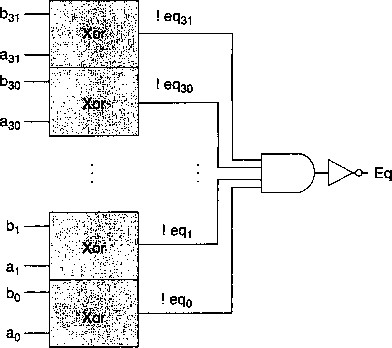

|
Goto loop |
这段编码有以下特性值得注意：
• 十进制的 15 ( 第 2 行）的十六进制表示为 OxOOOOOOOf 。以反向顺序来写就是 Of 00 00 00 。
• 十进制一 3 ( 第 5 行）的十六进制表示为 Oxfffffffd 。以反向顺序来写就 fd ff ff ff 。
•代码从地址0x100开始。第一条指令需要6个字节，而第二条需要2个字节。因此，循环的目标地 址为0x00000108。以反向顺序来写就是08 01 00 00。
练习题4.2对一个字节序列进行手工译码能帮助你理解处理器面临的任务。它必须读入字节序列，并确定 要执行什么指令。接下来，我们给出的是用来产生每个字节序列的汇编代码。在汇编代码的左边，你可以 看到每条指令的地址和字节序列。
irmovl $-4,%ebx rmmovl %esi,0x800(%ebx) halt
—些带立即数和地址偏移量的操作：
0x100: 30f3fcffffff I 0x106: 406300080000 I 0x10c: 00 |
B.包含一个函数调用的代码
0x200: 0x202: 0x207: 0x208: 0x208: 0x20e:
a06f
8008020000
00
30f30a000000
90
proc:
pushl %esi call proc halt
irmovl $10,%ebx ret
包含非法指令指示字节OxfO的代码
0x300: 505407000000 I
0x306: 10 |
0x307: fO |
0x308: bOlf I
mrmovl 7(%esp),%ebp nop
.byte OxfO # invalid instruction code popl %ecx
D.包含一个跳转操作的代码
0x400:
0x400: 6113 0x402: 7300040000 0x407: 00
loop:
subl %ecx, %ebx
je loop
halt
pushl指令中第二个字节非法的代码。
6362
aO
fO
0x500: 0x502: 0x503:
xorl %esi，％edx
.byte OxaO # pushl instruction code
.byte OxfO # Invalid register specifier byte
练习题 4.3 正如题目中建议的那样，我们修改了 IA32机器上的GCC产生的代码
%ebx
Save value of Get Start Get Count Test value of If <= 0, goto
Count--
Push Count
Count
zreturn
Push Start+1
Sum(Start+1, Count-1)
Add *Start goto done zreturn:
done: Restore %ebx Deallocate stack frame Restore %ebp
# int SumCint *Start, int Count) rSum: pushl %ebp
rrmovl %esp,%ebp pushl %ebx #
mrmovl 8(%ebp),%ebx # mrmovl 12(%ebp),%eax # andl %eax,%eax #
jle L38 #
irmovl $-l,%edx addl %edx, °/ 0 eax pushl %eax irmovl $4,%edx rrmovl %ebx,%eax addl %edx,7 0 eax pushl %eax call rSum
mrmovl (%ebx),%edx addl %edx,%eax #
jmp L39 #
L38: xorl %eax,%eax #
L39: mrmovl -4(%ebp),%ebx #
rrmovl %ebp,%esp # popl %ebp #
ret
练习题 4.4这道题给了你一个练习写汇编代码的机会。
int AbsSamdnt *Sta.rt , int Comit) 1 AbsSum:
|
2 |
pushl %ebp |
|
|
3 |
rrmovl %esp,%ebp |
|
|
4 |
mrmovl 8(%ebp),%ecx |
ecx = Start |
|
5 |
mrmovl 12(%ebp),%edx |
edx ~ Count |
|
6 |
irmovl $0, %eax |
ffim ~ 0 |
|
7 |
andl °/ 0 edx, %edx |
|
|
8 |
je End |
|
|
9 |
Loop: |
|
|
10 |
mrmovl (%ecx),%esi |
get x - ^Start |
|
1 '1 |
irmovl $0，％edi |
0 |
|
12 |
subl %esi，％edi |
-x |
|
13 |
jle Pos |
Skip if ~x <~ 0 |
|
14 |
rrmovl %edi,%esi |
x ~ ~x |
|
15 |
Pos: |
|
|
16 |
addl 7 0 esi,7 0 eax |
add x to sum |
|
17 |
irmovl $4,%ebx |
|
|
18 |
addl °/ 0 ebx,%ecx |
St art++ |
|
.19 |
irmovl $-l,%ebx |
|
|
20 |
addl %ebx,%edx |
Count --. |
jne End:
popl %ebp ret
Loop
Stop when 0
21
22
23
24
练习题 4.5这道题给了你一个练习写带条件传送汇编代码的机会。我们只给出循环的代码。剩下的部分与 练习题4.4的一样。
|
mrmovl (%ecx),%esi |
get x : *Sta.rt |
|
irmovl $0,%edi |
0 |
|
subl %esi,%edi |
-x |
|
cmovg %edi,%esi |
if -x > 0 then |
|
addl %esi,%eax |
add x to sum |
|
irmovl $4,%ebx |
|
|
addl %ebx,%ecx |
St art++ |
|
irmovl $-l,%ebx |
|
|
addl %ebx,%edx |
Count -- |
|
jne Loop |
Stop when 0 |
9 Loop:
10
1 2
3
4
5
6
7
9
练习题 4.6虽然难以想象这条特殊的指令有什么实际的用处，但是在设计一个系统时，在描述中避免 任何歧义是很重要的。我们想要为这条指令的行为确定一个合理的规则，并且保证每个实现都遵循这 个规则。
在这个测试中，subl指令将％esp的起始值与压入栈中的值进行了比较。这个减法的结果为0,表明 压入的是％6印的旧值。
练习题 4.7更难以想象为什么会有人想要把值弹出到栈指针。我们还是应该确定一个规则，并且坚持 它。这段代码序列将Oxabcd压入栈中，弹出到％esp,然后返回弹出的值。由于结果等于Oxabcd，我 们可以推断出popl%esp将栈指针设置为从存储器中读出来的那个值。因此，它等价于指令mrmovl (%esp) , %esp 0
练习题 4.8 EXCLUSIVE-OR函数要求两个位有相反的值 ： bool xor = (!a && b) I I (a && !b);
通常，信号eq和xor是互补的。也就是 ， 一个等于1,另一个就等于0。

练习题 4.9 EXCLUSIVE-OR电路的输出是位相等值 的补。根据德摩根定律（网络旁注DATA:BOOL),我 们能用OR和NOT实现AND,得到如下电路 ：
int Med3
A < = B && B < = C
C < = B && B <= A
B <= A && A <= C
C < = A && A < = B
1
这个设计只是对三个输入中找出最小值
练习题 4.10
的简单改变。
练习题 4.11这些练习使各个阶段的计算更加具体。
从g标代码中我们可以看到，指令位于地址OxOOe。
它由6个字节组成，前两个字节为0x30和0x84。后四个字节是0x000000 8 0 (十进制128)按字节反过
来的形式。
通用 |
具体 |
|
阶段 |
irmovl V, rB |
irmovl $128, %esp |
取指 |
icode: ifun — Mi[PC] rA:rB —MJPC + 1] valC — M 4 [PC + 2] valP — PC + 6 |
icode: ifun — [OxOOe] = 3:0 rA:rB —M 丨 [0x00f] = 8:4 valC<-M 4 [0x010]=128 valP — OxOOe + 6 = 0x014 |
译码 |
||
执行 |
valE — 0 + valC |
valE — 0 + 128 = 128 |
访问 |
||
写回 |
R[rB]— valE |
R[°/,esp] — valE = 128 |
酿 PC |
PC—valP |
PC — valP = 0x014 |
这个指令将寄存器％esp设为128,并将PC加6。
练习题4.12答案我们可以看到指令位于地址0x01c,由两个字节组成，值分别为OxbO和OxOS。 pushl指令（第6行）将寄存器％63?设为了 124，并且将9存放在了这个存储器位置。
通用 |
具体 |
|
mel |
popl rA |
popl %eax |
取指 |
icode: ifun — M^PC] rA:rB —M![PC + 1] |
icode:ifun <- Mj[0x01c] = b:0 rA:rB^-M][0x01d]=：0:8 |
valP —PC + 2 |
valP 0x0lc + 2 = OxOle |
|
译码 |
valA 一 R[%esp] valB — R[°/ 0 esp] |
val A — R[°/ 0 esp] = 124 valB — R[%esp] = 124 |
执行 |
valE valB + 4 |
valE —124 + 4=128 |
访存 |
valM — M 4 [valA] |
valM —M 4 [124] = 9 |
写回 |
R[%esp] — valE R[rA] — valM |
R[°/ 0 esp] — 128 R[%eax] <- 9 |
更新PC |
PC — valP |
PC — OxOle |
该指令将％6&父设为9, 将％的 ？ 设为128，并将PC加2。
练习题4.13沿着图4-20中列出的步骤，这里rA等于％esp,我们可以看到，在访存阶段，指令会将 valA,即栈指针的原始值，存放到存储器中，与我们在IA32中发现的一样。
练习题4.14沿着图4-20中列出的步骤，这里rA等于 ％ esp,我们可以看到，两个写回操作都会更新 ％ esp 。 因为写valM的操作后发生，指令的最终效果会是将从存储器中读出的值写入 ％ esp,就像在IA32中看到 的一样。
练习题4.15实现条件传送只需要对寄存器到寄存器的传送做很小的修改。我们简单地以条件测试的结果 作为写回步骤的条件：
阶段 |
cmovXX rA, rB |
取指 |
icode: ifun — M^PC] rA:rB — MJPC + 1] valP — PC + 2 |
译码 |
val A — R[rA] |
执行 |
valE — 0 + valA Cnd <- Cond(CC, ifun) |
访存 |
|
写回 |
if (Cnd) R[rB] — valE |
更新 PC |
PC valP |
练习题4.16我们可以看到这条指令位于地址0x023,长度为5个字节。第一个字节值为0x80,而后面 4个字节是0x00000029按字节反过来的形式，即调用的目标地址。popl指令（第7行）将栈指针设为 128 0
通用 |
具体 |
|
阶段 |
call Dest |
call 0x029 |
取指 |
icode: ifun — M 丨[PC】 |
icode:ifun Mj[0x023] = 8:0 |
valC—M 4 [PC+1] valP^-PC + 5 |
valC — M 4 [0x024] = 0x029 valP — 0x023 + 5 = 0x028 |
|
译码 |
VdlB <~ R[%esp] |
valB — R[°/ 0 esp] = 128 |
执行 |
valE — valB + -4 |
valE — 128 + -4= 124 |
访存 |
M 4 [valE] <- valP |
M 4 [124] — 0x028 |
写回 |
R[%esp] — valE |
R[%esp] — 124 |
更新PC |
PC — valC |
PC—0x029 |
这条指令的效果就是将％63?设为 124,. 将 0x028 (返回地址）存放到该存储器地址，并将 PC 设为 0x029 (调用的目标地址)。
练习题 4.17 练习题中所有的 HCL 代码都很简单明了，但是试着自己写会帮助你思考各个指令，以及如 何处理它们。对于这个问题 ， 我们只要看看 Y86 的指令集（见图 4-2), 确定哪些有常数字段。
bool need_valC =
icode in (IIRMOVL, IRMMOVL, IMRMOVL, IJXX, ICALL };
练习题 4.18 这段代码类似于 srcA 的代码 ：
int srcB =[
icode in i IOPL, IRMMOVL, IMRMOVL > : rB; icode in { IPUSHL, IPOPL, ICALL, IRET > : RESP;
1 : RNONE; # Don't need register
练习题4.19这段代码类似于dstE的代码：
int dstM =[
icode in { IMRMOVL, IPOPL > : rA;
1 : RNONE; # Don't write any register
]；
练习题4.20像在练习题4.14中发现的那样，为了将从存储器中读出的值存放到％esp，我们想让通过M 端口写的优先级高于通过E端口写。
练习题4_21这段代码类似于aluA的代码：
int aluB =[
icode in { IRMMOVL, IMRMOVL, IOPL, ICALL,
IPUSHL, IRET, IPOPL } : valB; icode in { IRRMOVL, IIRMOVL } : 0;
Other instructions don't need ALU
]；
练习题4.22实现条件传送惊人的简单：当条件不满足时，通过将目的寄存器设置为RNONE禁止写寄存 器文件。
int dstE =[
icode in { IRRMOVL > && Cnd : rB;
icode in { IIRMOVL, IOPL} : rB;
icode in { IPUSHL, IPOPL, ICALL, IRET > : RESP;
1 : RNONE; # Don't write any register
]；
练习题4.23这段代码类似于mem_addr的代码：
int mem_data =[
Value from register
icode in { IRMMOVL, IPUSHL } : valA;
Return PC
icode == ICALL : valP;
Default: Don't write anything
]；
练习题4.24这段代码类似于mem—read的代码：
bool mem_write = icode in { IRMMOVL, IPUSHL, ICALL >;
练习题4.25计算Stat字段需要从几个阶段收集状态信息：
## Determine instruction status int Stat =[
imem_error I I dmem_error : SADR;
!instr_valid: SINS; icode =: IHALT : SHLT;
1 : SAOK;
练习题 4.26这个题目非常有趣，它试图在一组划分中找到优化平衡。它提供了大量的机会来计算许多流 水线的吞吐量和延迟。
对一个二阶段流水线来说，最好的划分是块A、B和C在第一阶段，块D、E和F在第二阶段。第 一阶段的延迟为170ps,所以整个周期的时长为170+20=190ps。因此吞吐量为5.26 GIPS,而延迟 为 380ps。
对一个三阶段流水线来说，应该使块A和B在第一阶段，块C和D在第二阶段，而块E和F在第 三阶段。前两个阶段的延迟均为UOps,所以整个周期时长为130ps，而吞吐量为7.69 GIPS。延迟 为 390ps o
对一个四阶段流水线来说，块A为第一阶段，块B和C在第二阶段，块D是第三阶段，而块E和 F在第四阶段。第二阶段需要90ps,所以整个周期时长为UOps,而吞吐量为9.09 GIPS。延迟为 440ps o
最优的设计应该是五阶段流水线，除了 E和F处于第五阶段 以外， 其他每个块是一个阶段。周期时 长为80+20=100ps,吞吐量为大约10.00 GIPS,而延迟为500ps,变成更多的阶段也不会有帮助了， 因为不可能使流水线运行得比以lOOps为一周期还要快了。
练习题 4.27每个阶段的组合逻辑都需要300从ps,而流水线寄存器需要20ps。
整个的延迟应该是300 + 20；tps,而吞吐量（以GIPS为单位）应该是
1000 1000A:
^ + 20 = 300 + 20A：
当灸趋近于无穷大，吞吐量变为1000/20=50 GIPS。当然，这也使得延迟为无穷大。
这个练习题量化了很深的流水线引起的收益下降。当我们试圈将逻辑分割为很多阶段时，流水线寄存 器的延迟成为了一个制约因素。
练习题 4.28这段代码非常类似于SEQ中相应的代码，除了我们还不能确定数据存储器是否会为这条指令 产生一个错误信号。
Determine status code for fetched instruction int f^stat =[
imem_error: SADR;
!instr_valid : SINS; f.icode == IHALT : SHLT;
1 : SA0K;
]；
练习题 4.29这段代码只是简单地给SEQ代码中的信号名前加上前缀“d_”和“D_”。
int d_dstE =[
icode in { IRRMOVL, IIRMOVL, IOPL} : D_rB;
icode in { IPUSHL, IPOPL, ICALL, IRET > : RESP;
1 : RNONE; # Don't write any register
]；
练习题 4.30由于popl指令（第4行）造成的加载/使用冒险，rrmovl指令（第5行）会暂停一个周 期。当它进入译码阶段，popl指令处于访存阶段，使於_(^七£和的_43七]^都等于％esp。如果两种情况反 过来，那么来自M_valE的写回优先级较高，导致增加了的栈指针被传送到rrmovl指令作为参数。这与 练习题4.7中确定的处理popl%esp的惯例不一致。
练习题 4.31这个问题让你体验一下处理器设计中一个很重要的任务一为一个新处理器设计测试程序。 通常，我们的测斌程序应该能测试所有的冒险可能性，而且一旦有相关不能被正确处理，就会产生错误的 结果。
对于此例，我们可以使用对练习题4.30中所示的程序稍微修改的版本：
irmovl $5, %edx irmovl $0x100，％esp rmmovl %edx,0(%esp) popl %esp nop nop
rrmovl %esp,°/ 0 eax
两个nop指令会导致当rrmovl指令在译码阶段中时，popl指令处于写回阶段。如果给予处于写回 阶段中的两个转发源错误的优先级，那么寄存器％eax会设置成增加了的程序计数器，而不是从存储器中 读出的值。
|
from |
execute |
|
from |
memory |
|
from |
memory |
|
from |
write back |
|
from |
write back |
|
file |
练习题4.32这个逻辑只需要检查五个转发源： int d_valB =[
|
d_srcB |
==e_dstE : |
:e_valE |
# |
|
d_srcB |
== M 一 dstM : |
:m_valM |
# |
|
d_srcB |
==M_dstE : |
: M 一 valE |
# |
|
d_srcB |
==W_dstM : |
:W.valM |
# |
|
d_srcB |
==W_dstE : |
:W.valE |
# |
1 : d_rvalB; # Use value read from register file
即使条件传送
练习题4.33这个改变不会处理条件传送不满足条件的情况，因此将dstE设置为RNONE。 并没有发生，结果值还是会被转发到下一条指令。
irmovl $0x123,%eax irmovl $0x321,%edx xorl %ecx,%ecx cmovne 7 0 eax，%edx addl %edx,%edx halt
CC = 100
Not transferred
Should be 0x642
这段代码将寄存器％edx初始化为0x321。条件数据传送没有发生，所以最后的addl指令应该 中的值翻倍，得到0x642。不过，在修改过的版本中，条件传送源值0x321被转发到ALU的输 A valA,而valB正确地得到了操作数值0x123。两个输入加起来就得到结果0x444。
练习题4.34这段代码完成了对这条指令的状态码的计算。
## Update the status int m_stat =[
dmem_error : SADR;
: M_stat;
练习题4.35设计下面这个测试程序是用来建立控制组合A (图4_67),并探测是否出了错
# Code to generate a combination of not-taken branch and ret
irmovl Stack, %esp
irmovl rtnp,%eax
|
4 |
pushl %eax |
# |
|
.5 • |
xorl %eax,%eax |
# |
|
6 |
jne target |
# |
|
7 |
irmovl $l,%eax |
# |
|
8 |
halt |
|
|
9 |
target: ret |
# |
|
10 |
irmovl $2,%ebx |
# |
Set up return pointer
Set Z condition code
Not taken (First part of combination)
Should execute this
Second part of combination Should not execute this
halt
rtnp: irmovl $3,%edx
halt .pos 0x40 Stack:
# Should not execute this
12 1 3
14
15
设计这个程序是为了出错（例如，如果实际上执行了 ret指令）时，程序会执行一条额外的irmovl 指令，然后停止。 因此， 流水线中的错误会导致某个寄存器更新错误。这段代码说明实现测试程序需要非 常 小心。 它必须建立起可能的错误条件，然后再探测是否有错误发生。
练习题4.36设计下面这个测试程序是用来建立控制组合B (见图4-67)的。模拟器会发现流水线寄存器 的气泡和暂停控制信号都设置成0的情况，因此我们的测试程序只需要建立它需要发现的组合情况。最大 的挑战在于当处理正确时，程序要做正确的事情。
# Test instruction that modifies %esp followed by ret
irmovl mem,%ebx
Sets %esp to point to return point Returns to return point
Return point
?. mrmovl 0(%ebx) ,%esp #
ret #
halt #
rtnpt: irmovl $5,%esi #
halt
.pos 0x40
Holds desired stack pointer Top of stack: Holds return point
mem: .long stack #
10 .pos 0x50
f1 stack: .long rtnpt #
这个程序使用了存储器中两个初始化了的字。第一个字 （ mem)保存着第二个字 （ stack—期望的栈 指针）的地址。第二个字保存着ret指令期望的返回点的地址。这个程序将栈指针加载到 ％ esp ， 并执行 ret指令。
练习题4.37从图4-66我们可以看到，由于加载/使用冒险，流水线寄存器D必须暂停。
Conditions for a load/use hazard E.icode in { IMRMOVL, IPOPL } &&
E_dstM in { d_srcA, d_srcB >;
练习题4.38
成气泡：
从图 4-66 中可以看到，由于加载/使用冒险，或者分支预测错误，流水线寄存器 E 必须设置
bool E_bubble =
Mispredicted branch
(E一icode == IJXX && !e_Cnd) II
Conditions for a load/use hazard
icode in i IMRMOVL, IPOPL } &&
dstM in { d_srcA, d_srcB>;
练习题 4.39 这个控制需要检查正在执行的指令的代码，还需要检查流水线中更后面阶段中的异常。
## Should the condition codes be updated? bool set_cc = E_icode == IOPL &&
State changes only during normal operation
!m_stat in { SADR, SINS, SHLT > && !W_stat in { SADR, SINS, SHLT >;
练习题4.40在下一个周期向访存阶段插入气泡需要检查当前周期中访存或者写回阶段中是否有异常。
Start injecting bubbles as soon as exception passes through memory stage
bool M_bubble = m_stat in i SADR, SINS, SHLT > I| W_stat in { SADR, SINS, SHLT >;
对于暂停写回阶段，只用检查这个阶段中的指令的状态。如果当访存阶段中有异常指令时我们也暂停 了，那么这条指令就不能进入写回阶段。
bool W_stall = W_stat in { SADR, SINS, SHLT >;
练习题4.41此时，预测错误的频率是0.35,得到= 0.20X0.35X2 = 0.14,而整个CPI为1.25。看上
去收获非常小，但是如果实现新的分支预测策略的成本不是很高的话，这样做还是值得的。
练习题4.42在这个简化的分析中，我们把注意力集中在了内循环上，这是估计程序性能的一种很有用的 方法。只要数组足够大，花在代码其他部分的时间可以忽略不计。
使用条件转移的代码的内循环有11条指令，当数组元素是0或者为负时，这些指令都要执行，当 数组元素为正时，要执行其中的10条。平均是10.5条。使用条件传送的代码的内循环有10条指 令，每次都必须执行。
用来实现循环闭合的跳转除了当循环中止时之外，都能预测正确。对于非常长的数组，这个预测错 误对性能的影响可以忽略不计。对于基于跳转的代码，其他唯一可能引起气泡的源取决于数组元素 是否为正的条件转移。这会导致两个气泡，但是只在50%的时间里会出现，所以平均值是1.0。在 条件传送代码中，没有气泡。
我们的条件转移代码对于每个元素平均需要10.5+1.0=11.5个周期（最好情况要11个周期，最差情 况要12个周期），而条件传送代码对于所有的情况都需要10.0个周期。
我们的流水线的分支预测错误处罚只有两个周期——远比对性能更高的处理器中很深的流水线造成的 处罚要小得多。因此，使用条件传送对程序性能的影响不是很大。